哈喽，大家好。
今天给大家分享用ChatGPT开发安全头盔佩戴检测。代码完全用GPT4完成。
首先，给ChatGPT设定角色，告诉我们要完成的任务，然后让ChatGPT给出详细的步骤。
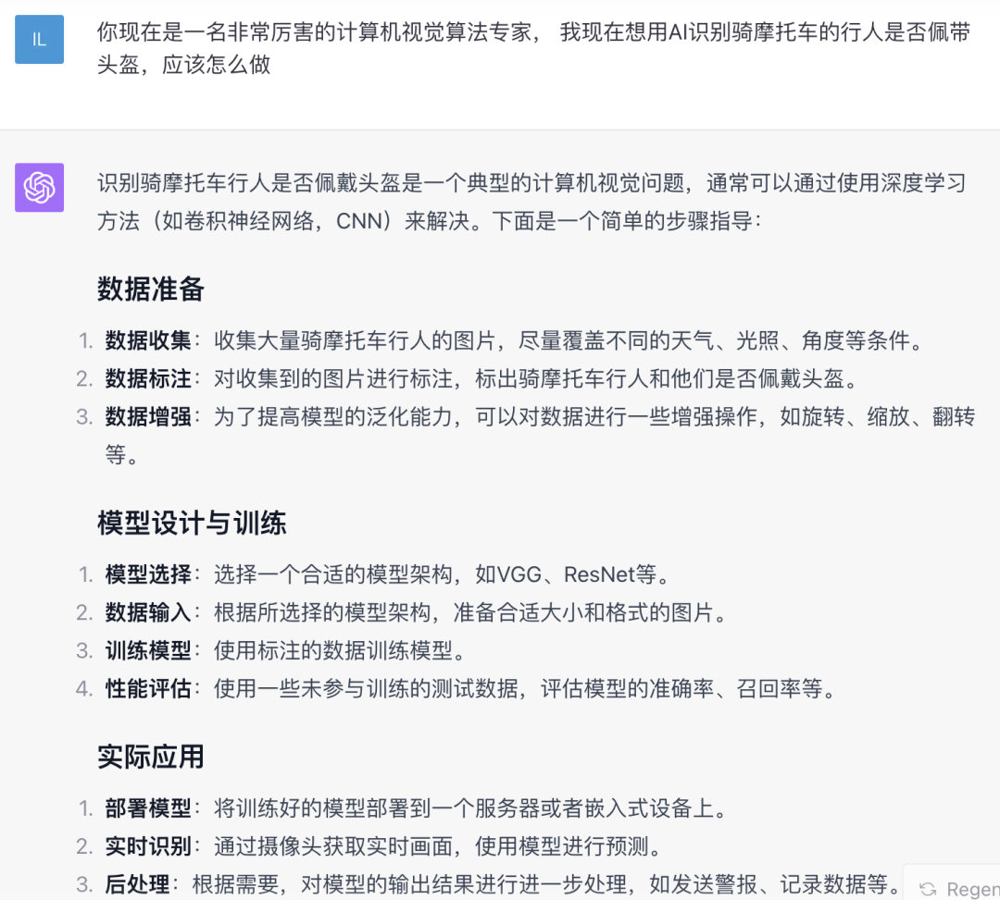图片
从数据准备与标注、模型选择与设计到模型部署，ChatGPT给出非常具体、详细、可执行的步骤。
这里，我们主要关注数据准备和模型选择训练。
如果自己收集数据，再标注费时费力，我们可以让ChatGPT帮我们查找一下是否有现成的资源
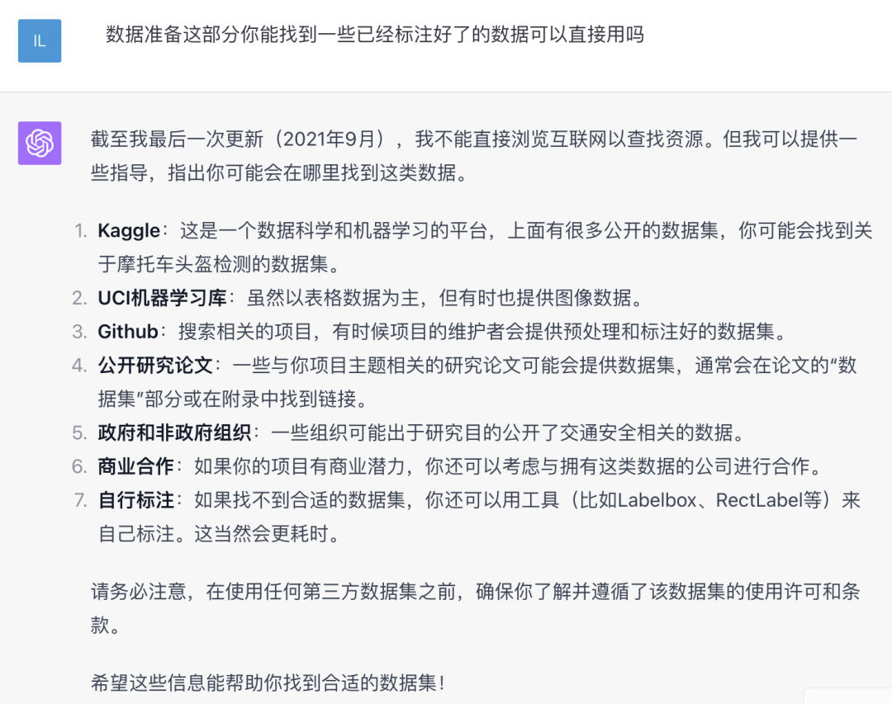图片
他没有直接给我们找到数据集，但是提供了可以搜索资源的网站，如：Kaggle、GitHub，我们可以在这些网站搜索。
我在Kaggle和GitHub上查找后，都能找到已经标注好的数据集，最后，我选择了Kaggle上的一个数据集
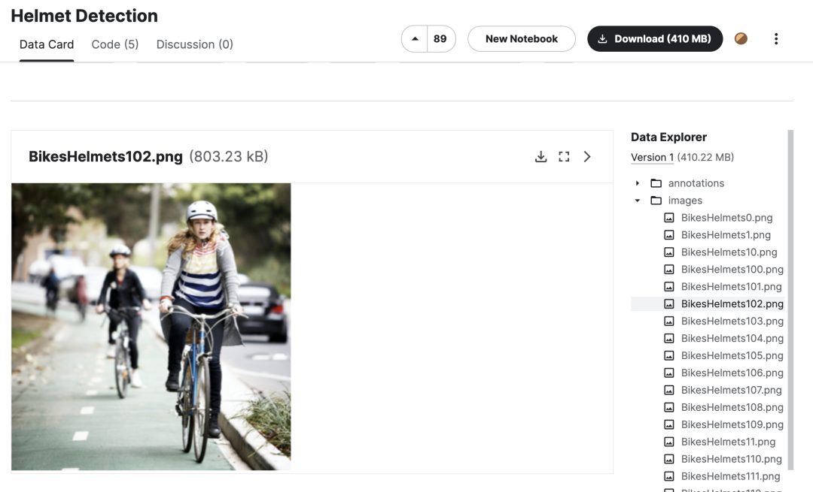图片
数据集包含戴头盔和未戴头盔两种分类，标注文件是PASCAL格式。
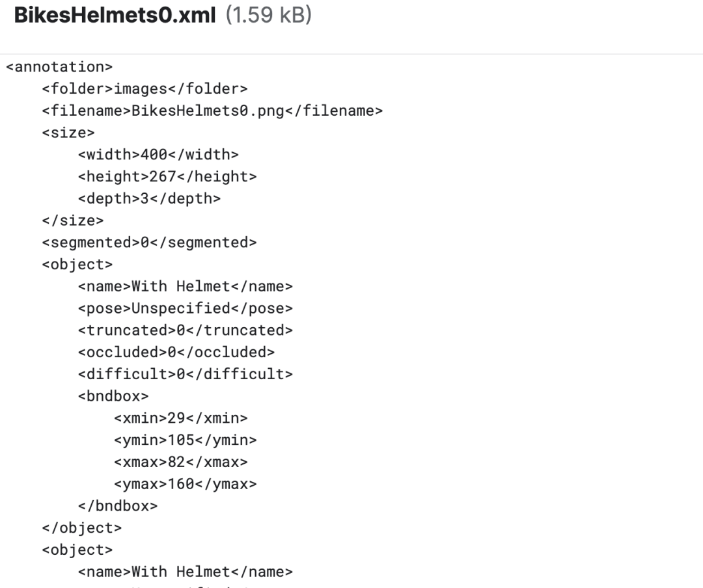图片
下载数据集，让 ChatGPT写代码解析标注文件，在原图上绘制标注结果
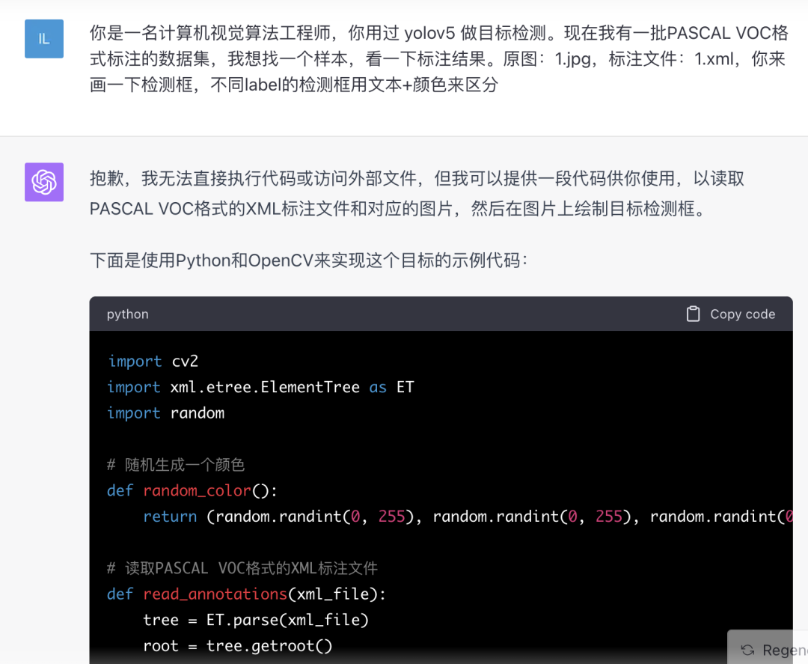图片
代码是正确的，只要修改下输入文件的路径，就可以直接运行，看到标注的检测框
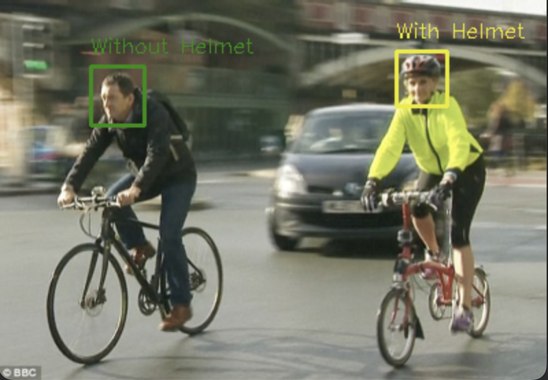图片
有了数据集，我们再在ChatGPT选择合适的模型
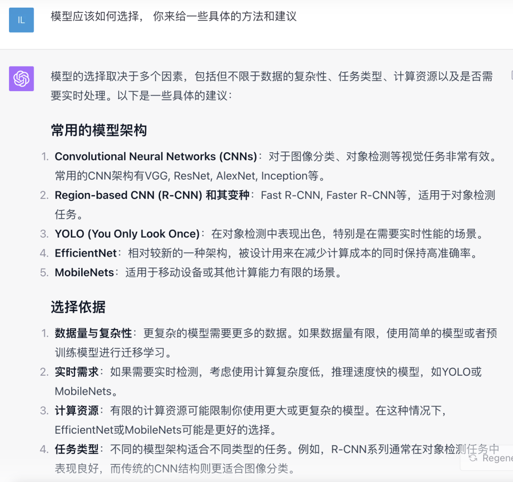图片
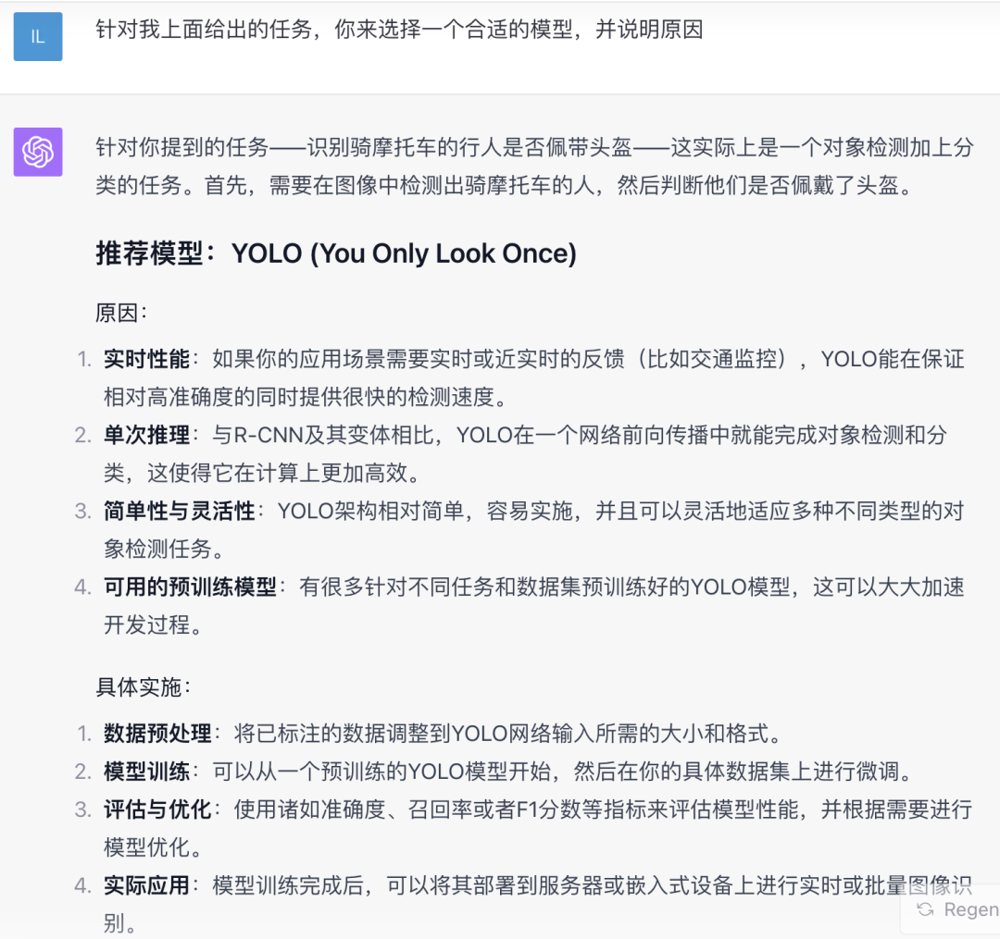图片
ChatGPT在经过了一番对比说明之后，最终选择了YOLO。
但由于数据集的标注文件是PASCAL格式，因此，我们还需要让ChatGPT将其转为YOLO格式
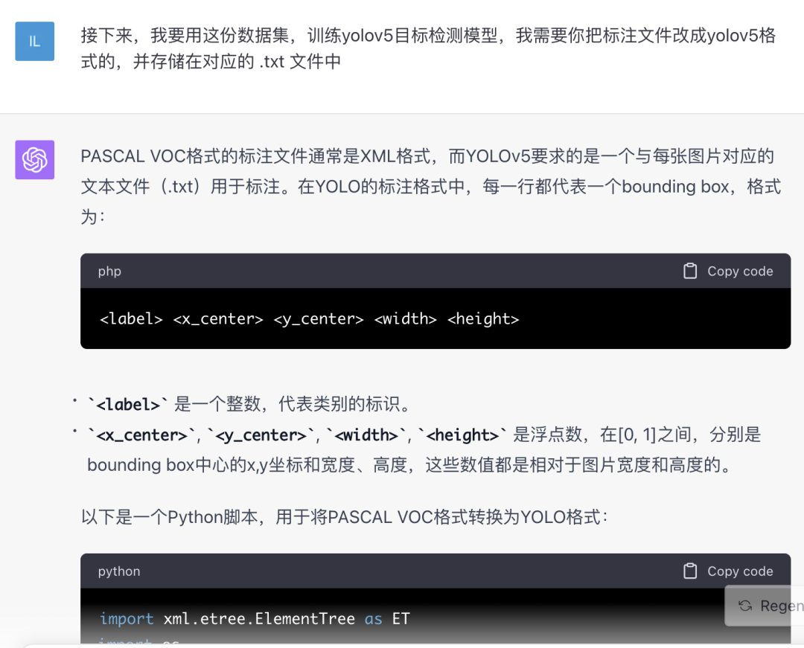图片
为了节省篇幅，我就不贴代码了。这里，ChatGPT只拿1个文件做实例进行转换，你也可以让ChatGPT写一个遍历目录的程序，来批量转换。
至此，数据集已经完全准备好了，剩下的就是ChatGPT训练模型。
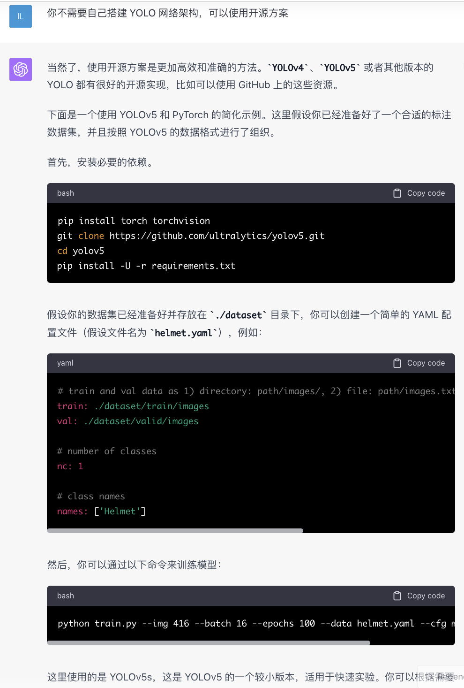图片
刚开始ChatGPT自己编写了YOLO网络架构，我估计把握住不住，弄不好得陪他调一天的BUG，所以，我让他改成用开源的方案完成，他选择了YOLOv5。
安装依赖，配置yaml文件，执行训练命令三步走即可。
因为我事前没有告诉ChatGPT有多少分类，所以他默认生成的yaml配置文件类别是1，大家根据自己的业务灵活调整即可。
训练命令也没有问题，使用yolov5s模型作为预训练模型，执行命令的时候会自动下载yolov5s.pt，如果你已经下载好了，可以添加--weights参数本地的权重文件即可。
模型训练完成后，可以查看训练效果
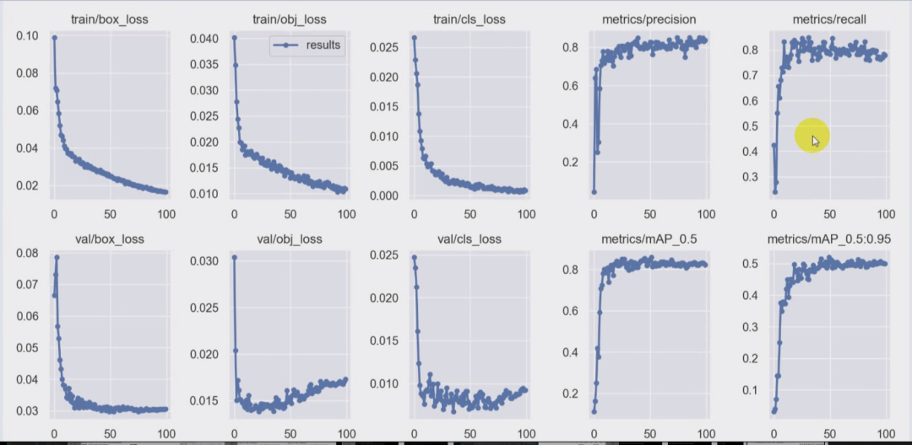图片
最后，让ChatGPT生成推理代码，就可以应用。
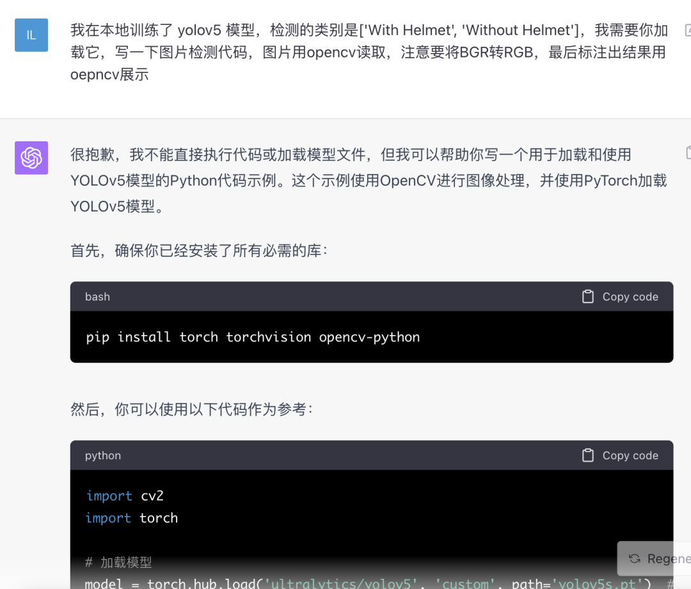图片
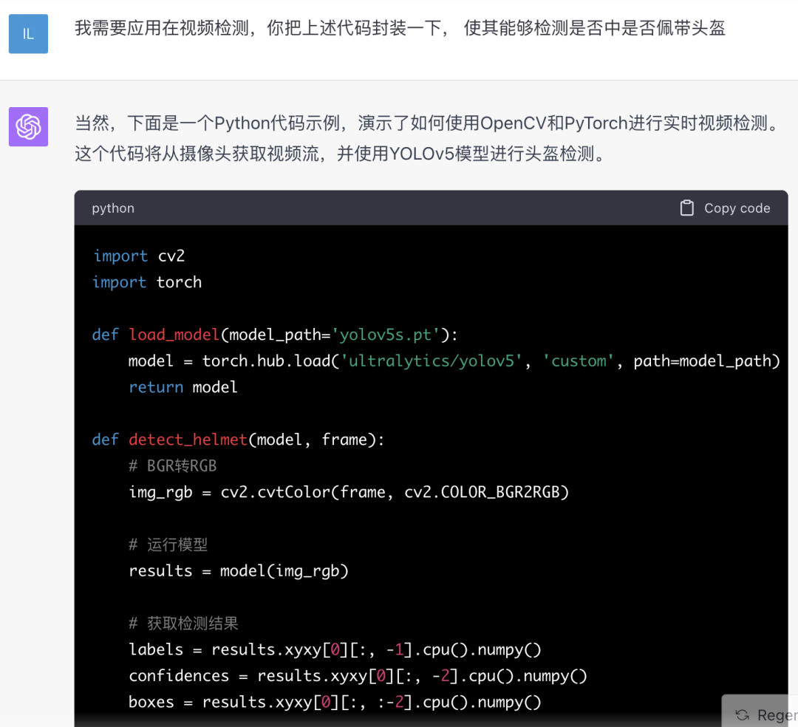图片
ChatGPT生成的代码基本都是能直接用的，但还是需要要了解一些深度学习的知识，用起来会更高效。不然一报错，直接贴给ChatGPT容易越走越偏。
![]()